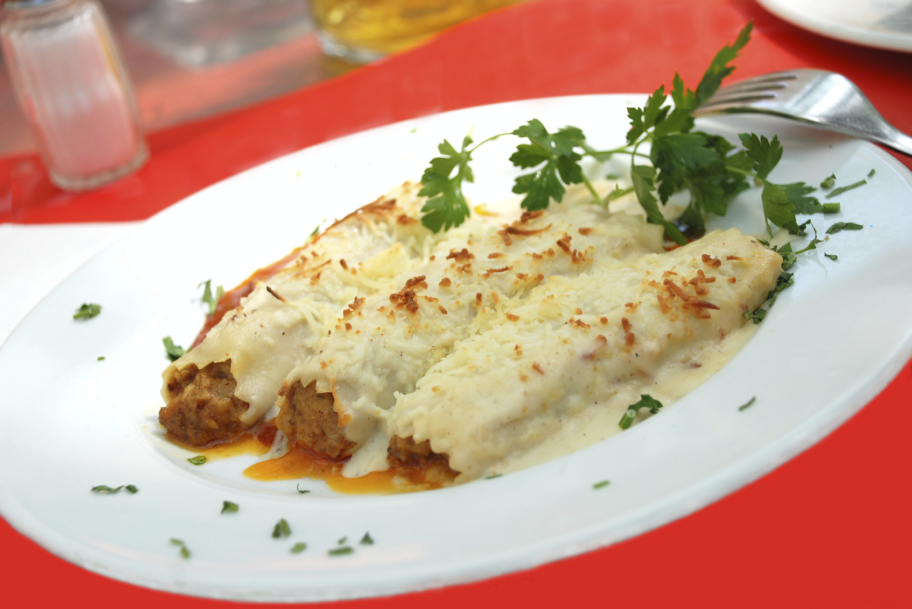
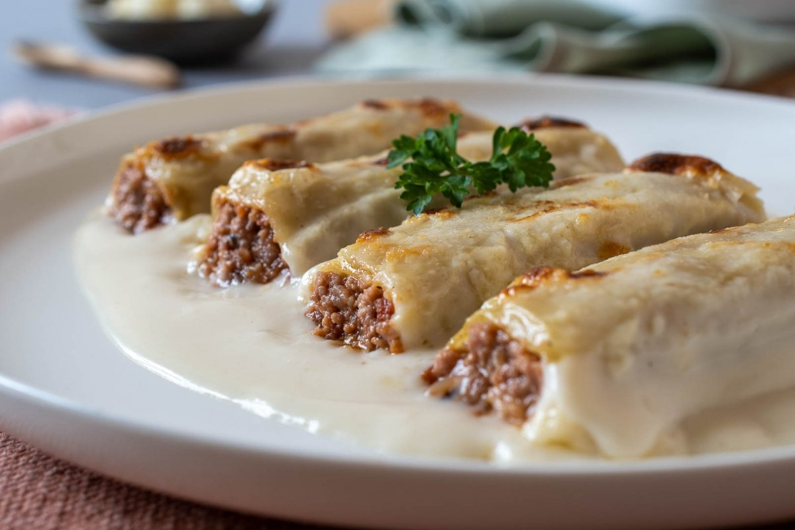

Canelones a la catalana



Ingredientes:
-
Para el relleno:
- 12 placas de canelones
- 250 g de carne de ternera (picada)
- 250 g de carne de cerdo (picada)
- 150 g de pechuga de pollo (picada)
- 1 cebolla grande (picada finamente)
- 1 diente de ajo (picado)
- 1 tomate maduro (rallado)
- 50 ml de vino blanco
- 2 cucharadas de paté o foie-gras (opcional, para un toque más auténtico)
- Sal, pimienta y nuez moscada al gusto
- Aceite de oliva
-
Para la bechamel:
- 50 g de mantequilla
- 50 g de harina
- 500 ml de leche
- Sal, pimienta y nuez moscada al gusto
-
Para gratinar:
- 100 g de queso rallado (Emmental, Gruyère o Parmesano)
- 1 cucharada de mantequilla
Preparación:
-
Preparar el relleno:
- En una sartén grande, calienta un poco de aceite de oliva y sofríe la cebolla y el ajo hasta que estén dorados.
- Añade las carnes (ternera, cerdo y pollo) y cocina hasta que cambien de color.
- Agrega el vino blanco y deja reducir.
- Incorpora el tomate rallado y cocina hasta que se evapore el líquido.
- Añade el foie-gras o paté (si usas), mezcla bien y ajusta la sal, pimienta y nuez moscada.
- Retira del fuego, deja enfriar y tritura ligeramente para obtener una textura homogénea.
-
Cocer las placas de canelones:
- Hierve las placas de canelones según las instrucciones del paquete.
- Extiéndelas sobre un paño limpio para que se enfríen y no se peguen.
-
Rellenar y enrollar los canelones:
- Coloca una porción del relleno en cada placa de canelón y enrolla formando cilindros.
- Coloca los canelones en una fuente para horno untada con mantequilla.
-
Preparar la bechamel:
- En un cazo, derrite la mantequilla y añade la harina, removiendo bien hasta formar una pasta dorada.
- Añade la leche poco a poco, sin dejar de batir, hasta obtener una salsa cremosa.
- Condimenta con sal, pimienta y nuez moscada al gusto.
-
Montaje y gratinado:
- Retira la hoja de laurel y sirve caliente con arroz, puré o pan crujiente.
Consejo:
- Para un sabor más intenso, puedes añadir un poco de caldo de carne o leche al relleno.